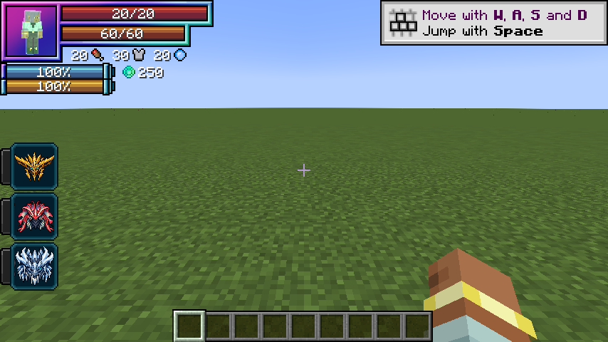

On this page
Discontinued archive: Tensura Myths ended at 0.36.1. No further updates are planned.
An alternate Human branch: Awakened Hunter → Apex Hunter → Sovereign Hunter.
Requirements
- Awakened Hunter: 100,000 total EP and 1 distinct boss type.
- Apex Hunter: 400,000 total EP and 3 distinct boss types.
- Sovereign Hunter: 2,000,000 total EP, 5 distinct boss types and one mastered Myths Unique.
Rewards
HP / SHP bonuses: +100 / +400; +500 / +3,200; +1,000 / +6,600. The new stage replaces the old racial bonuses. Each stage grants the corresponding aura recovery skill.
Boss credit
Repeated kills of one boss type give one entry. Player-attributed kills while Human or a hunter count. Wither, Ender Dragon and supported boss-tagged mobs qualify.
Related
Aura regeneration · Storm Crown
Pictures and video
